Сделано
с любовью
с любовью
0
а это уже:
Мы вместе:
наша формула любви
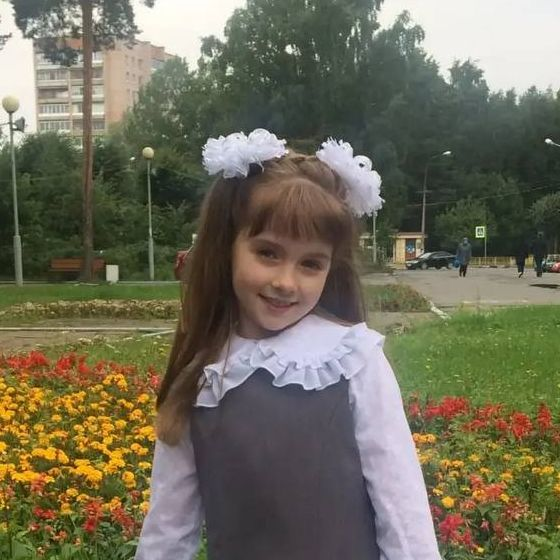
+
=
МЫ
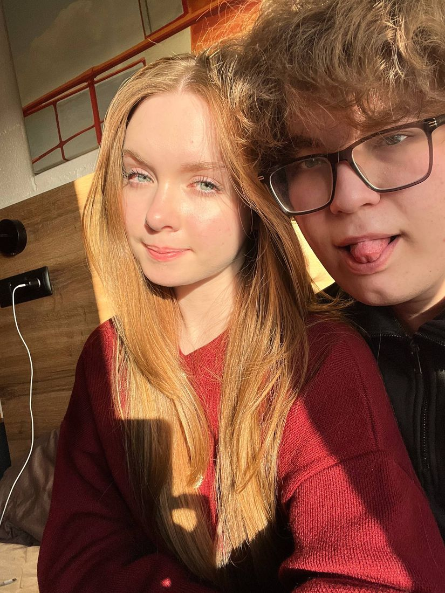
одна планета,
196 стран,
7 млрд человек,
но лучшим из всех
являешься Ты
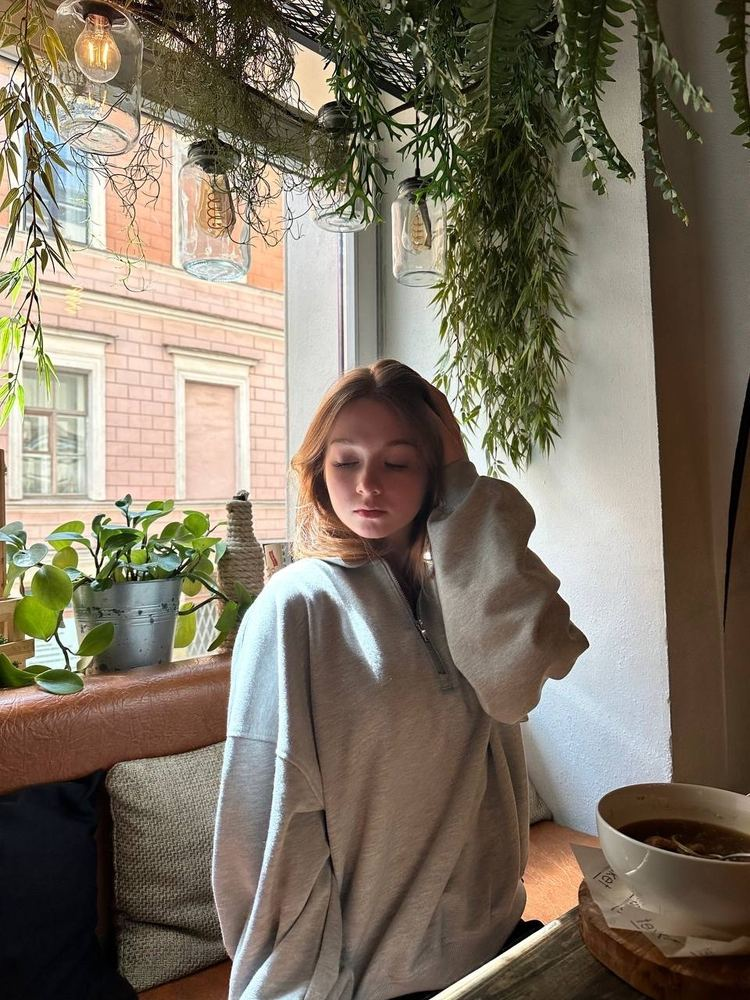
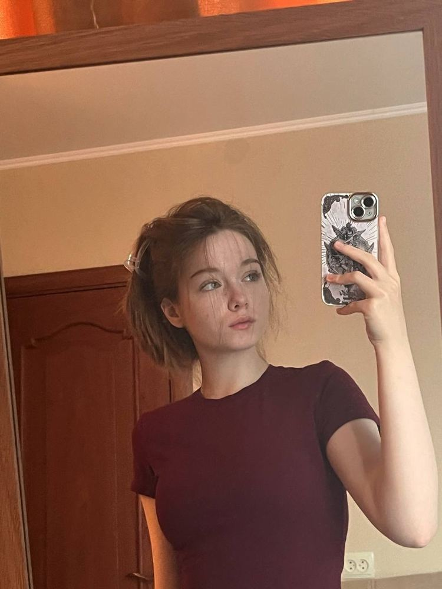
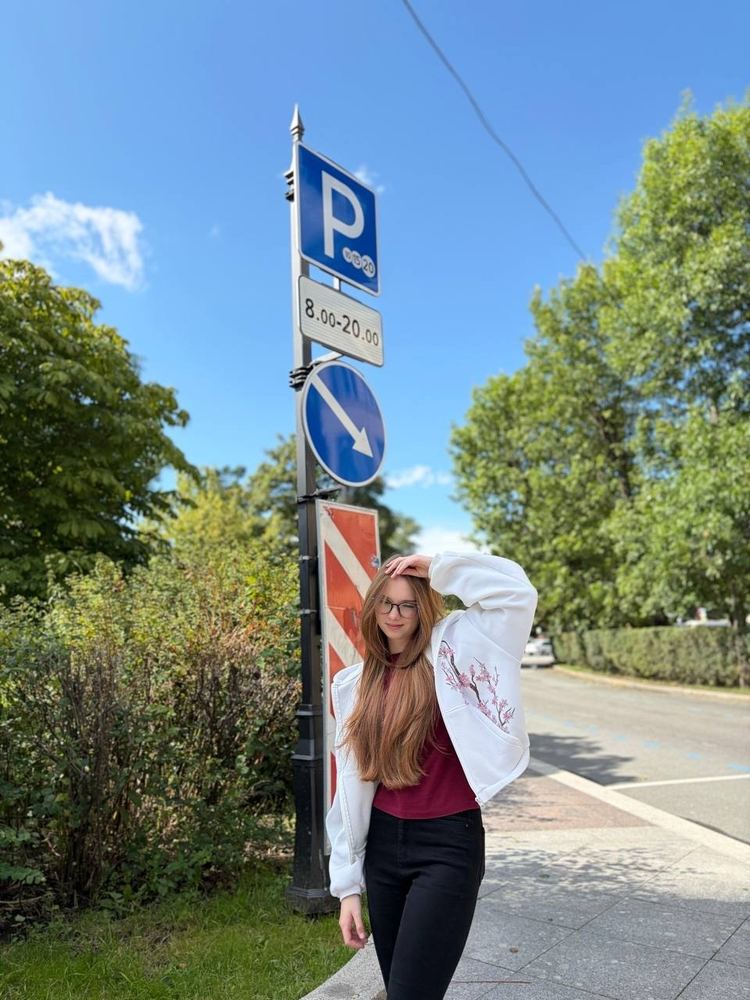
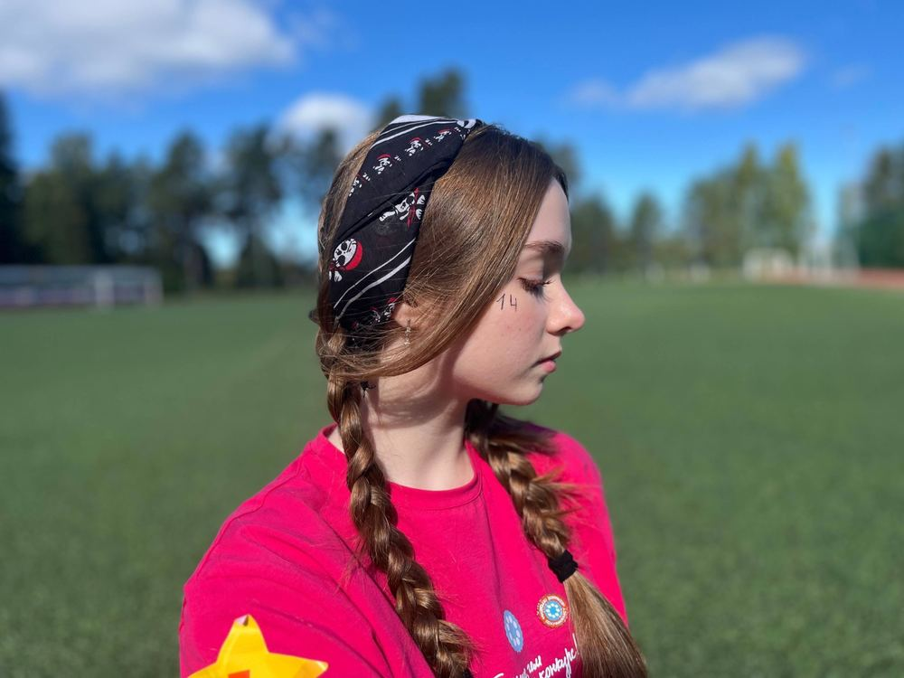
100
причин, почему
я люблю тебя
нажимай на сердечки — их больше, чем кажется
Письма для тебя
открой, когда…
P.S. я очень тебя люблю ♥
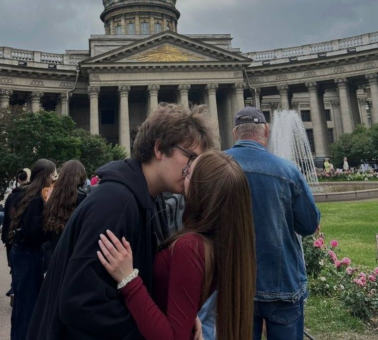
миллион поцелуев для тебя
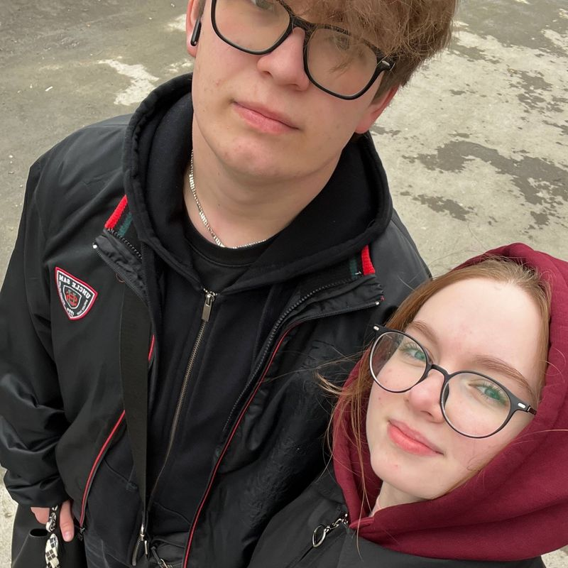
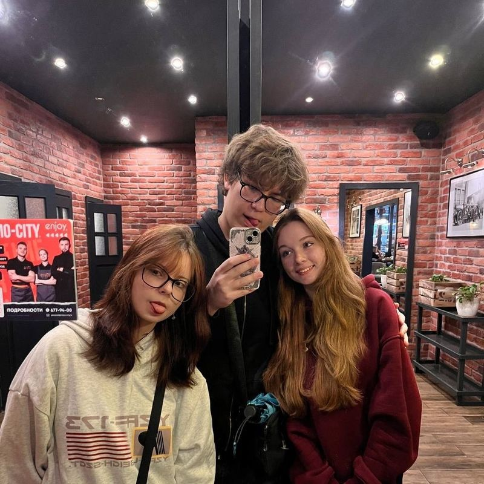
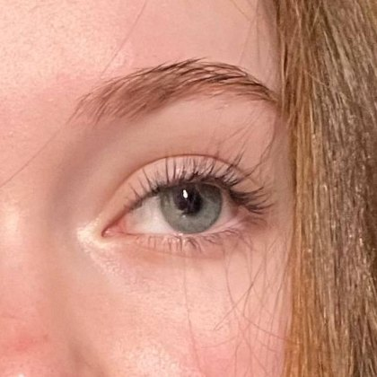
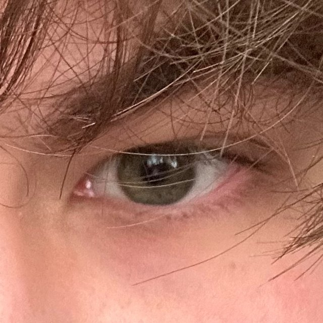
КОНЕЦ АЛЬБОМА, но не конец НАШЕЙ ИСТОРИИ
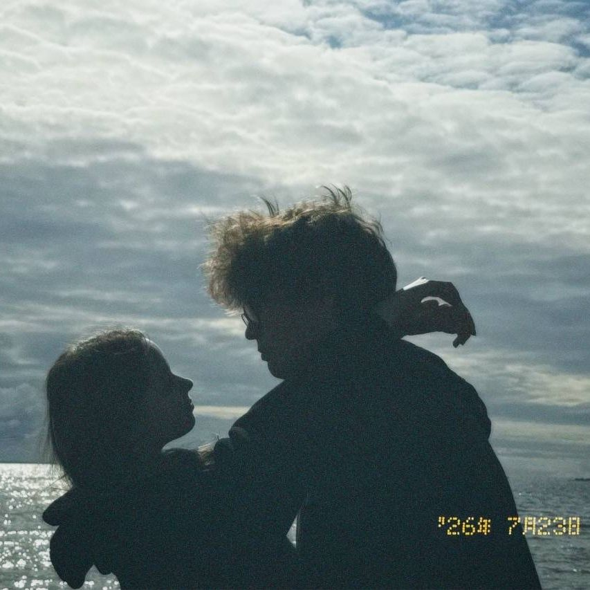